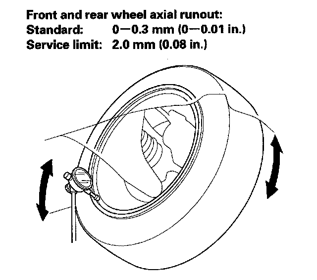
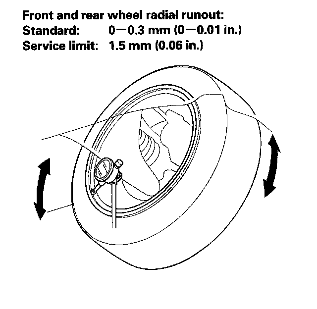

Wheels: Testing and Inspection
Wheel Runout InspectionNOTE: When measuring the front wheel runout, turn the back side of the wheel slowly by hand.
1. Raise the vehicle, and support it with safety stands in the proper locations.
2. Check for bent or deformed wheels.
3. Set up the dial gauge as shown, and measure axial runout by turning the wheel.

4. Reset the dial gauge to the position shown, and measure the radial runout.

5. If the wheel runout is not within the specification, check the wheel bearing end play and make sure the mating surfaces on the brake disc and the inside of the wheel are clean.
6. If the bearing end play is within the specification but the wheel runout is more than the service limit, replace the wheel.